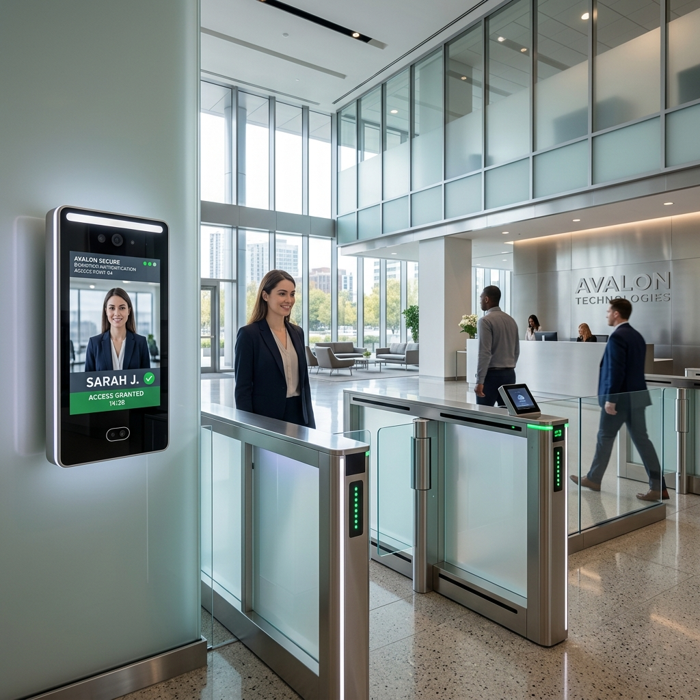

Commercial Access Control Biometrics: 2026 Facial Recognition & OSDP Protocols

1. Executive Summary: The Identity Verification Paradigm
Securing the physical perimeter and internal restricted zones of modern corporate headquarters, financial institutions, and data centers requires transitioning from legacy credential authorization to absolute biometric identity verification. For decades, commercial access control architectures relied almost exclusively on low-frequency (125 kHz) RFID proximity cards and basic PIN keypads. These legacy technologies represent a severe operational and security vulnerability; physical cards are easily lost, stolen, or cloned utilizing inexpensive, pocket-sized RFID skimming devices, while PIN codes are effortlessly compromised via covert observation or employee credential sharing.
Furthermore, legacy access control panels communicate with peripheral door readers utilizing the unencrypted Wiegand protocol. Developed in the 1980s, Wiegand transmits raw credential data in unencrypted, cleartext electrical pulses across internal wall wiring. A threat actor can easily detach a hallway card reader, attach a covert man-in-the-middle (MitM) recording bleeder to the exposed data wires, and harvest hundreds of employee badge numbers to execute unauthorized portal breaches at will.
```
+------------------------+-----------------------------------+-----------------------------------+
| Architectural Metric | Legacy Access Control | 2026 Biometric & OSDP Architecture|
+------------------------+-----------------------------------+-----------------------------------+
| Primary Credential | 125 kHz RFID Proximity Card | 3D Facial Biometrics / Mobile BLE |
| Reader-to-Panel Protocol| Wiegand (Unencrypted Cleartext) | OSDP v2.2 (AES-128 Secure Channel)|
| Credential Vulnerability| Extremely High (Easily Cloned) | Near-Zero (3D Liveness Detection) |
| Wiring Architecture | Point-to-Point (6-8 Wires per Door)| Multi-Drop RS-485 Bus (4 Wires) |
| Anti-Passback Logic | Soft / Frequently Bypassed | Hard / Strict Tailgating Lockout |
+------------------------+-----------------------------------+-----------------------------------+
```
This comprehensive architectural guide establishes the definitive 2026 engineering standards for commercial biometric access control. Security directors, lead system integrators, and infrastructure architects will explore the advanced 3D structured light biometrics, cryptographic OSDP secure channel protocols, and optical turnstile mechanics required to deploy impenetrable, frictionless enterprise access control grids.
2. 3D Facial Recognition & Anti-Spoofing Liveness Detection
The defining technological leap in 2026 commercial access control is the widespread deployment of touchless, AI-powered 3D facial recognition terminals replacing physical card readers at high-security portal entry points.
3D Structured Light & Infrared Depth Mapping
Modern enterprise biometric terminals (such as the Hikvision MinMoe series) utilize advanced 3D Structured Light and dual-lens infrared (IR) optical systems. When an employee approaches a secure portal, the terminal projects an invisible matrix of thousands of infrared light dots directly onto the individual's face. The specialized IR camera captures the resulting geometric distortion of the dot matrix, generating a highly precise, millimeter-accurate 3D topographic depth map of the user's facial skeletal structure, jawline geometry, and eye socket cavities.
```
+-------------------------------------------------------------------+
| 3D Structured Light Biometric Depth Mapping & Liveness Engine |
+-------------------------------------------------------------------+
| +-----------------------+ +-------------------------------+ |
| | IR Dot Matrix Emitter | --> | Projects 10,000+ Infrared Dots| |
| +-----------------------+ | onto Approaching User's Face | |
| +-----------------------+ +-------------------------------+ |
| | Dual IR Optical Sensor| --> | Captures 3D Topographic Depth | |
| +-----------------------+ | Map & Sub-Surface Skin Profile| |
| | |
| +-------------------------------+ |
| | AI Anti-Spoofing Liveness NPU | |
| | (Blocks Photos, Videos, Masks)| |
| +-------------------------------+ |
+-------------------------------------------------------------------+
```
This complex 3D depth analysis is processed locally in sub-second timeframes (`<0.2 seconds`) by the terminal's internal Neural Processing Unit (NPU). By matching the captured 3D mathematical mesh against stored biometric templates, the terminal achieves frictionless, walk-through authorization without requiring employees to stop, remove glasses, or physically interact with scanning hardware.
AI Anti-Spoofing & Liveness Detection Mechanics
A primary vulnerability of early 2D facial recognition systems was susceptibility to "Presentation Attacks" (spoofing), where an intruder held up a high-resolution photograph, a digital video on an iPad, or a lifelike silicone mask to trick the camera into unlocking the door.
```
+------------------------+-----------------------------------+-----------------------------------+
| Presentation Attack | Legacy 2D Facial Recognition | 2026 3D Biometric Liveness Engine |
+------------------------+-----------------------------------+-----------------------------------+
| High-Res Photograph | Frequently Triggers Door Unlock | Dropped (Fails 3D Depth Map) |
| Digital Video on Tablet| Frequently Triggers Door Unlock | Dropped (Fails IR Sub-Surface Scan)|
| 3D Silicone Mask | Triggers Unlock (Matches Contour) | Dropped (Fails Skin Thermal/Pulse)|
| Identical Twin Brother | Frequently Triggers Door Unlock | Dropped (Fails Micro-Skeletal Mesh)|
+------------------------+-----------------------------------+-----------------------------------+
```
2026 enterprise biometric terminals completely eliminate presentation attacks through advanced AI Liveness Detection. The internal NPU continuously analyzes micro-behavioral indicators (such as involuntary pupillary dilation and subtle facial muscle twitches) alongside sub-surface infrared reflection coefficients.
Because human skin reflects infrared light in a fundamentally different spectral pattern compared to paper, digital LCD screens, or synthetic silicone, the biometric engine instantly detects the presentation attack, refuses portal authorization, and triggers an immediate silent alarm to the Security Operations Center (SOC).
3. OSDP v2.2 Secure Channel Protocols (AES-128 Encryption)
Securing the physical communication wiring between peripheral biometric door terminals and centralized intelligent door controllers requires replacing the obsolete, unencrypted Wiegand protocol with the Open Supervised Device Protocol (OSDP).
```
+-------------------------------------------------------------------+
| OSDP v2.2 Secure Channel Multi-Drop RS-485 Wiring Architecture |
+-------------------------------------------------------------------+
| |
| +---------------------------+ |
| | Intelligent Door Controller| |
| | (Cisco / Mercury Security)| |
| +---------------------------+ |
| | |
| [ 4-Wire RS-485 Bus ] (AES-128 Encrypted Payload) |
| | |
| +---> [ Biometric Terminal 1 (Address 01) ] |
| | |
| +---> [ Biometric Terminal 2 (Address 02) ] |
+-------------------------------------------------------------------+
```
OSDP RS-485 Multi-Drop Bus Architecture
Developed by the Security Industry Association (SIA) and ratified as an international standard (IEC 60839-11-5), OSDP utilizes a robust, bi-directional RS-485 serial bus architecture. Unlike Wiegand, which requires dedicated, point-to-point home-run wiring (typically 6 to 8 wires) from the control panel to every individual door reader, OSDP allows security architects to deploy a 4-wire multi-drop bus configuration. A single 4-wire cable can daisy-chain multiple biometric readers, keypads, and door sensors back to the controller, drastically reducing cabling infrastructure costs and simplifying installation across sprawling commercial floorplates.
OSDP Secure Channel (AES-128 Cryptographic Handshake)
The critical security mandate of 2026 enterprise access control is the compulsory enforcement of OSDP Secure Channel. Secure Channel initiates an advanced cryptographic handshake between the biometric terminal and the door controller, encapsulating all transmitted payload data within robust AES-128 encryption.
```
+------------------------+-----------------------------------+-----------------------------------+
| Protocol Attribute | Legacy Wiegand Protocol | OSDP v2.2 Secure Channel |
+------------------------+-----------------------------------+-----------------------------------+
| Cryptographic Security | None (Cleartext Electrical Pulses)| AES-128 Encrypted Payload |
| Wiring Supervision | Unsupervised (Blind to wire cuts) | Continuous Bi-Directional Polling |
| Bi-Directional Comm | No (One-way reader to panel only) | Yes (Supports LCD Prompts & Audio)|
| MitM Skimming Risk | Extremely High (Easy wire tap) | Near-Zero (Encrypted Handshake) |
+------------------------+-----------------------------------+-----------------------------------+
```
Furthermore, OSDP provides continuous bi-directional wiring supervision. The door controller continuously polls the peripheral biometric terminal utilizing encrypted challenge-response packets. If a threat actor attempts to cut the RS-485 communication line or attach a covert skimming device, the controller instantly detects the disruption in the cryptographic polling sequence, locks down the portal, and flags a critical tamper alarm in the VMS dashboard.
4. Optical Glass Turnstile Integration & Anti-Passback Logic
In high-throughput enterprise environments—such as corporate headquarters lobbies, financial trading floors, and transit concourses—securing the perimeter requires pairing biometric identification with physical barrier enforcement, specifically high-speed optical glass turnstiles.
```
+------------------------+-----------------------------------+-----------------------------------+
| Enforcement Parameter | Standard Magnetic Door Lock | High-Speed Optical Glass Turnstile|
+------------------------+-----------------------------------+-----------------------------------+
| Tailgating Prevention | Poor (Relies on employee honor) | Excellent (Infrared Beam Matrix) |
| Throughput Capacity | Low (~10 employees per minute) | High (35 - 40 employees per min) |
| Physical Barrier | Solid Door (Requires manual pull) | Motorized Retracting Glass Wings |
| Anti-Passback Control | Enforced at Single Door Frame | Enforced across Multi-Lane Array |
+------------------------+-----------------------------------+-----------------------------------+
```
Infrared Beam Matrix & Tailgating Interception
High-speed optical turnstiles feature sleek architectural enclosures equipped with motorized retracting glass wings and an internal matrix of high-density infrared optical beams. When an employee successfully authenticates via the biometric facial terminal, the glass wings retract in sub-second timeframes, permitting passage.
```
+-------------------------------------------------------------------+
| Optical Turnstile Infrared Beam Matrix Tailgating Interception |
+-------------------------------------------------------------------+
| |
| [Turnstile Pedestal A] (IR Emitters) |
| | | | | (High-Density IR Beam Matrix) |
| v v v v |
| [Employee 1 (Auth)] ---> [Intruder (Tailgater)] |
| ^ ^ ^ ^ |
| | | | | (Detects Second Body Mass) |
| [Turnstile Pedestal B] (IR Receivers) |
| |
| * Action: Glass wings clamp shut instantly & high-decibel siren *|
+-------------------------------------------------------------------+
```
As the employee walks through the lane, the internal infrared beam matrix tracks their exact physical location, velocity, and body mass profile. If an unauthorized intruder attempts to "tailgate" (closely trailing behind the authorized employee before the barrier closes), the infrared beam matrix instantly detects the presence of a second distinct body mass. The turnstile's internal motor drive immediately clamps the glass wings shut, blocking the intruder's path while triggering a high-decibel localized siren and flashing red barrier LEDs.
Hard Anti-Passback & Logical Zone Containment
To maintain absolute spatial control over employee movements, enterprise access control architectures enforce strict Hard Anti-Passback logic across all turnstile arrays and secure perimeter doors.
```
+-------------------------------------------------------------------+
| Hard Anti-Passback Logical Zone Enforcement Workflow |
+-------------------------------------------------------------------+
| 1. Employee A authenticates at Lobby Turnstile ( `Outside -> In` )|
| 2. Controller updates Employee A status to "Inside Secure Zone 1" |
| 3. Employee A throws badge out window to unauthorized Friend B |
| 4. Friend B attempts to authenticate at Lobby Turnstile |
| 5. Controller checks status: Employee A is already "Inside" |
| 6. Anti-Passback violation triggered: Turnstile remains locked |
+-------------------------------------------------------------------+
```
Anti-passback logic prevents credential sharing and establishes logical zone containment. When an employee enters a secure facility through an entry turnstile (`Outside -> Inside`), the centralized access control database updates their logical state to "Inside Secure Zone 1."
If that employee attempts to pass their physical badge out a window to an unauthorized friend, or if a threat actor clones their credential and attempts to enter the same lobby turnstile, the door controller inspects the database, identifies the logical state mismatch (the user is already marked as "Inside"), instantly denies entry, and flags a critical anti-passback security violation. The employee cannot re-enter the facility until they have successfully executed a verified egress transaction (`Inside -> Outside`) through an exit turnstile.
5. Comprehensive Expert Frequently Asked Questions
What is the exact difference between Wiegand and OSDP v2.2 protocols in commercial access control?
Wiegand is an obsolete, unencrypted access control protocol developed in the 1980s that transmits raw credential data in cleartext electrical pulses over point-to-point wiring (6-8 wires), making it highly vulnerable to covert man-in-the-middle (MitM) wiretapping and credential skimming. Open Supervised Device Protocol (OSDP v2.2) is a modern international standard (IEC 60839-11-5) that utilizes a 4-wire RS-485 multi-drop bus architecture. Crucially, OSDP enforces Secure Channel, encapsulating all bi-directional communication within robust AES-128 encryption and continuous wiring supervision, completely eliminating wiretapping vulnerabilities and ensuring absolute data integrity between readers and controllers.
How do Hikvision MinMoe biometric terminals prevent spoofing attacks utilizing 3D Structured Light?
Hikvision MinMoe biometric terminals utilize advanced 3D Structured Light and dual-lens infrared optical systems to project an invisible matrix of thousands of infrared dots onto an approaching user's face. The terminal captures the geometric distortion of the dot matrix to create a highly precise, millimeter-accurate 3D topographic depth map of the facial skeletal structure. Paired with AI Liveness Detection that analyzes micro-behavioral indicators and sub-surface infrared skin reflection coefficients, the terminal instantly detects and blocks spoofing presentation attacks—such as high-resolution photographs, digital tablet videos, or lifelike silicone masks—achieving a liveness accuracy exceeding 99%.
How does Hard Anti-Passback logic physically secure enterprise data centers and corporate campuses?
Hard Anti-Passback logic is an advanced access control rule designed to prevent credential sharing and track precise employee zone containment. When an employee enters a secure facility through an entry turnstile, the centralized database updates their logical state to "Inside." If that employee attempts to pass their badge back to an unauthorized individual outside, or if a cloned card is presented at the entry reader, the controller identifies the state mismatch (the user is already marked as "Inside"), instantly denies portal access, and triggers a security violation alarm. The employee cannot re-enter until they have executed a verified exit transaction through an authorized egress portal.
Why is continuous wiring supervision critical in OSDP access control architectures?
In legacy Wiegand installations, the door controller is completely blind to the physical state of the communication wiring; if an intruder cuts the wires to a card reader or attaches a covert skimming bleeder, the controller registers no anomaly. OSDP resolves this vulnerability through continuous bi-directional wiring supervision. The controller continuously polls peripheral biometric terminals utilizing encrypted challenge-response packets. If a communication line is severed or tampered with, the controller instantly detects the polling disruption, locks down the associated door strike, and triggers a priority tamper alarm in the VMS dashboard.
How do optical glass turnstiles utilize infrared beam matrices to intercept tailgating intruders?
High-speed optical glass turnstiles feature motorized retracting glass wings and an internal array of high-density infrared optical beams lining the pedestrian lane. When an authorized employee authenticates, the wings retract and the infrared beam matrix tracks their exact physical location, velocity, and body mass profile as they traverse the lane. If an unauthorized intruder attempts to tailgate by closely trailing behind the employee, the infrared beam matrix instantly detects the presence of a second distinct body mass. The turnstile's internal motor drive immediately clamps the glass wings shut, blocking the intruder while triggering a high-decibel localized siren and flashing red barrier LEDs.